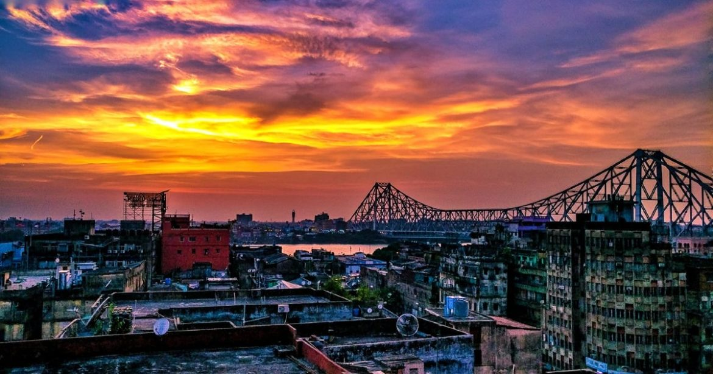

About

Kolkata, or Calcutta as it was formerly called, is the present capital of the eastern state of West Bengal and one of the most densely populated cities in India. Kolkata became a British trading post in the last part of the 17th Century. The city that once served as the showpiece capital of the British power in India is noted for its colonial buildings including the grand Victoria Memorial. Other important sights include the Howrah Bridge, an engineering marvel that links the city and Howrah Station, and the Indian Museum. Gateway to eastern India and home to prominent intellectuals, the city is known for its easy pace and intellectual prowess.
Kolkata’s system of streets and roads reflects the city’s historical development. An express highway, Kazi Nazrul Islam Avenue, stretches from Kolkata to Dum Dum, though most local streets are narrow. The main roads form a grid pattern primarily in the old European sector, but elsewhere road planning has a random character. Part of the reason for this has been the difficulty of providing enough river crossings; it is for the same reason that most streets and highways run from north to south. Nullahs (watercourses) and canals that require bridging also have been important factors in influencing the road pattern.